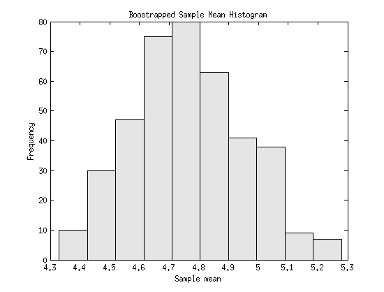
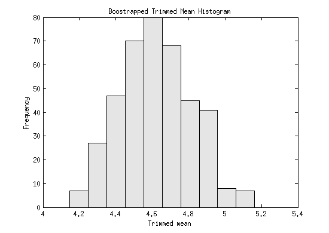

% generate 200 rs from chi-square df=f
X = chi2rnd(5,1,200);
PART A
n = length(X); % sample size B = 400; % number of bootstrap replicates % Get the value of the statistic of interest. theta = mean(X); % Use unidrnd to get the indices to the resamples. inds = unidrnd(n,n,B); % Extract these from the data. xboot = X(inds); thetab = mean(xboot); % get the mean for each column using seb = std(thetab); biasEst = mean(thetab)-theta; figure(1) hist(thetab) set(get(gca,'child'),'FaceColor',[.9 .9 .9],'EdgeColor','black'); title('Boostrapped Sample Mean Histogram') ylabel('Frequency'); xlabel('Sample mean')
PART B
thetat = trimmean(X,10); % use MATLAB trimmed mean function to estimate thetatb = trimmean(xboot,10); % generate boostrap trimmed mean sebt = std(thetatb); % calculate the boostrap standard error biastEst = mean(thetatb)-thetat; % estimate the bias figure(2) hist(thetatb) set(get(gca,'child'),'FaceColor',[.9 .9 .9],'EdgeColor','black'); title('Boostrapped Trimmed Mean Histogram') ylabel('Frequency'); xlabel('Trimmed mean') par={'Sample Mean';'Trimmed Mean'}; Value = [mean(thetab); mean(thetatb)]; StdError = [seb; sebt]; Bias = [biasEst; biastEst]; T=table(Value,StdError,Bias,'RowNames',par); disp(T)
Value StdError Bias
______ ________ ___________
Sample Mean 4.764 0.18783 -0.004131
Trimmed Mean 4.6224 0.1955 -0.00086687
